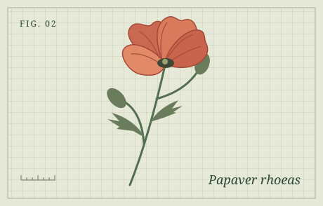

JQUERY LAB / PART 02
Visibility and effects
Hide a note, fade a specimen and slide a panel open.
Task 2
Visibility
The fern was growing in the shade of a stone wall.
Task 3
Fade a specimen

Task 4
Slide a field note
Look closely at the fern. Smaller leaflets grow on both sides of the central stalk.